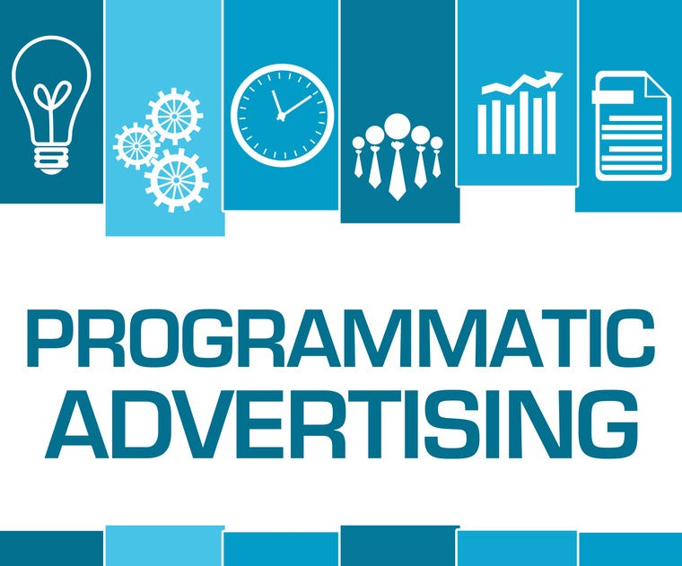
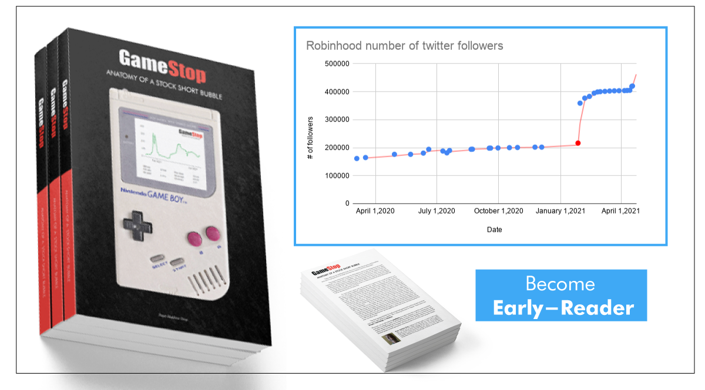

Email programmatic ads platform idea


For trying to see how to market better this book is was visiting websites and platforms about trading and finance like SeekingAlpha. Browsed some analyst's profiles in seeking alpha like this one highlighted in the browsing history below
Visited this profile and clicked on the link into the description
I am interested in Exchange but more in Exchange Matching Engine than in metals Exchange but was curious to know more about this website and get in contact with. Once on the website I was spotted and put into this advertising bucket that will lead to the event below
Some hours after this Email advertising showed up in my mailbox. Programmatic advertising just tries to adapt to our online behavior but it is hard for it to guess the underlying fact of these behaviors that we have because my behaviors led the system to expect that I am interested in buying metal investment While I was interested in book publishing. Another cent of dollars lost by trying to sell me something that I am not interested in but this Ad reminded me the there is an opportunity for building a platform that tracks and spots email advertising and event email communication sent by companies. There are platforms for tracking advertising done in Google keyword Ads, Youtube ads, and displays networked but it seems that there is not platform focused on tracking email advertising and communication in my knowledge(Tell me if you know one).
So you have the opportunity to build it and to offer it to these programmatic advertising users because they all want to know how and what their competitors do.
Go build this Email ads tracking platform!
I am copy editing this book about finance that goes into a data-driven analysis about the Gamestop bubble that the US stock market experienced, you can get early reader access by using this link
